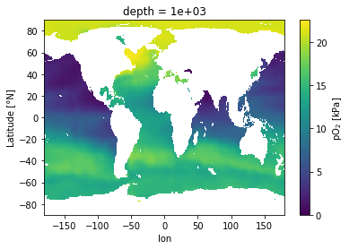
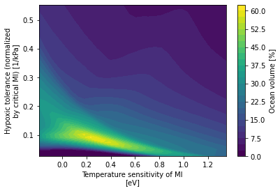

Defining the Aerobic Safety Margin
Contents
Defining the Aerobic Safety Margin#
%load_ext autoreload
%autoreload 2
from itertools import product
import cmocean
import intake
import matplotlib.pyplot as plt
import metabolic as mi
import numpy as np
import thermodyn
import util
import xarray as xr
Load World Ocean Atlas data#
Access intake catalog for remote data.
catalog = intake.open_catalog("data/catalogs/woa2018-catalog.yml")
catalog
Generate merged dataset#
Loop over variables of interest; generate a combined dataset.
ds_list = []
variables = dict(
oxygen=dict(keep_vars=["o_an", "depth_bnds"]),
temperature=dict(keep_vars=["t_an"]),
salinity=dict(keep_vars=["s_an"]),
)
for variable, info in variables.items():
ds_list.append(
catalog[variable](time_code=0)
.to_dask()[info["keep_vars"]]
.isel(time=0, drop=True)
.sel(depth=slice(0, 1000.0))
)
ds = xr.merge(ds_list)
ds["pO2"] = thermodyn.compute_pO2(
O2=ds.o_an,
T=ds.t_an,
S=ds.s_an,
depth=xr.full_like(ds.t_an, fill_value=1.0) * ds.depth,
gravimetric_units=True,
)
ds["dz"] = ds.depth_bnds.diff("nbounds").squeeze()
ds["area"] = util.compute_grid_area(ds)
ds["volume"] = (ds.dz * ds.area).where(ds.t_an.notnull())
ds.volume.attrs["long_name"] = "Volume"
ds.volume.attrs["units"] = "m^3"
ds.lat.attrs["long_name"] = "Latitude"
ds.lat.attrs["units"] = "°N"
ds = ds.compute()
ds
<xarray.Dataset>
Dimensions: (depth: 47, lat: 180, lon: 360, nbounds: 2)
Coordinates:
* lat (lat) float32 -89.5 -88.5 -87.5 -86.5 ... 86.5 87.5 88.5 89.5
* lon (lon) float32 -179.5 -178.5 -177.5 -176.5 ... 177.5 178.5 179.5
* depth (depth) float32 0.0 5.0 10.0 15.0 ... 850.0 900.0 950.0 1e+03
Dimensions without coordinates: nbounds
Data variables:
o_an (depth, lat, lon) float32 nan nan nan nan ... 303.3 303.3 303.3
depth_bnds (depth, nbounds) float32 0.0 2.5 2.5 ... 975.0 975.0 1.025e+03
t_an (depth, lat, lon) float32 nan nan nan ... -0.1925 -0.1925
s_an (depth, lat, lon) float32 nan nan nan nan ... 34.91 34.91 34.91
pO2 (depth, lat, lon) float32 nan nan nan nan ... 21.16 21.16 21.16
dz (depth) float32 2.5 5.0 5.0 5.0 5.0 ... 50.0 50.0 50.0 50.0 50.0
area (lat, lon) float64 1.079e+08 1.079e+08 ... 1.079e+08 1.079e+08
volume (depth, lat, lon) float64 nan nan nan ... 5.395e+09 5.395e+09
Attributes: (12/49)
Conventions: CF-1.6, ACDD-1.3
title: World Ocean Atlas 2018 : mole_concentrat...
summary: Climatological mean dissolved oxygen for...
references: Garcia, H. E., K. Weathers, C. R. Paver,...
institution: National Centers for Environmental Infor...
comment: global climatology as part of the World ...
... ...
publisher_email: NCEI.info@noaa.gov
nodc_template_version: NODC_NetCDF_Grid_Template_v2.0
license: These data are openly available to the p...
metadata_link: https://www.nodc.noaa.gov/OC5/woa18/
date_created: 2019-07-29
date_modified: 2019-07-29 Peak and verify#
Make a few plots to ensure that every is as expected.
ds.dz.plot(y='depth', yincrease=False, marker='o');

ds.volume.sel(lon=179.5).plot(yincrease=False);

ds.pO2.sel(lon=179.5).plot(yincrease=False, vmax=25);

ds.pO2.sel(depth=0.0).plot();
ds.pO2.sel(depth=1000.0).plot();

ds.t_an.sel(lon=179.5).plot(yincrease=False);

ds.s_an.sel(lon=179.5).plot(yincrease=False);
Load trait space data#
curator = util.curator_local_assets()
cat = curator.open_catalog()
ds_trait_space = cat['trait-space-hires'].to_dask().load()
ds_trait_space.trait_spc_active.plot();

Define viable traits#
Loop over trait space and store an index array into geographic space for each viable trait.
%%time
trait_kji_ndx = {}
for v in ['trait_spc_active', 'trait_spc_resting']:
# get trait space vars
trait_space = ds_trait_space[v]
hypoxic_tol, temp_sens = trait_space.dims
# loop over trait space and lat bands, sum trait frequency
trait_kji_ndx[v] = {}
for i, A_parm in enumerate(trait_space[hypoxic_tol].values):
trait_kji_ndx[v][i] = {}
for j, Eo in enumerate(trait_space[temp_sens].values):
# compute metabolic index
Phi = mi.Phi(ds.pO2, ds.t_an, A_parm, Eo, dEodT=mi.dEodT_bar)
(I,) = np.asarray((1 < Phi) & (Phi <= 2)).ravel().nonzero()
trait_kji_ndx[v][i][j] = I
CPU times: user 52.6 s, sys: 6.47 s, total: 59.1 s
Wall time: 1min
Volume of viable habitat in trait-space#
%%time
dso_vol = xr.Dataset()
viable_trait_mask = np.zeros(ds.pO2.shape)
for v in ['trait_spc_active', 'trait_spc_resting']:
trait_space = ds_trait_space[v]
metabolic_baseline = trait_space.attrs['metabolic_baseline']
hypoxic_tol, temp_sens = trait_space.dims
vol = xr.full_like(trait_space, fill_value=0.0)
for i, A_parm in enumerate(trait_space[hypoxic_tol].values):
for j, Eo in enumerate(trait_space[temp_sens].values):
K, J, I = np.unravel_index(trait_kji_ndx[v][i][j], ds.pO2.shape)
viable_trait_mask[:] = 0.0
viable_trait_mask[K, J, I] = 1.0
# Phi = mi.Phi(ds.pO2, ds.t_an, Ac=A_parm, Eo=Eo, dEodT=mi.dEodT_bar)
# viable_trait_mask = xr.where((1 < Phi) & (Phi <= 2), 1.0, 0.0)
vol[i, j] += (ds.volume * viable_trait_mask).sum(['depth', 'lat', 'lon'])
vol_percent = 100.0 * vol / ds.volume.sum()
vol_percent.attrs['long_name'] = 'Ocean volume'
vol_percent.attrs['units'] = '%'
vol *= 1e-6 # convert to 10^6 m^3
vol.attrs['units'] = '10$^6$ m$^3$'
name = f'vol_habitat_{metabolic_baseline}'
dso_vol[name] = vol
dso_vol[f'{name}_percent'] = vol_percent
dso_vol
CPU times: user 50.2 s, sys: 2.64 s, total: 52.9 s
Wall time: 53.8 s
<xarray.Dataset>
Dimensions: (Ac: 30, Eo: 30, Ao: 30)
Coordinates:
* Ac (Ac) float64 0.0258 0.0287 ... 0.4973 0.5528
* Eo (Eo) float64 -0.191 -0.1379 ... 1.295 1.348
* Ao (Ao) float64 0.0613 0.0684 ... 1.282 1.429
Data variables:
vol_habitat_active (Ac, Eo) float64 0.0 0.0 ... 1.361e+10
vol_habitat_active_percent (Ac, Eo) float64 0.0 0.0 0.0 ... 4.178 4.049
vol_habitat_resting (Ao, Eo) float64 5.862e+10 ... 5.153e+09
vol_habitat_resting_percent (Ao, Eo) float64 17.43 17.46 ... 1.278 1.532dso_vol.vol_habitat_active.plot.contourf(levels=30);

dso_vol.vol_habitat_resting.plot.contourf(levels=30);

dso_vol.vol_habitat_active_percent.plot.contourf(levels=30);

plt.contourf(
dso_vol.vol_habitat_active_percent.Eo,
1 / dso_vol.vol_habitat_active_percent.Ac,
dso_vol.vol_habitat_active_percent,
levels=np.arange(0, 102.5, 2.5),
)
cb = plt.colorbar()
plt.xlabel(util.attrs_label(dso_vol.Eo.attrs))
inv_attrs = dict(**dso_vol.Ac.attrs)
inv_attrs['long_name'] = 'Inverse of hypoxic tolerance'
inv_attrs['units'] = 'kPa'
plt.ylabel(util.attrs_label(inv_attrs))
cb.ax.set_ylabel(util.attrs_label(vol_percent.attrs));
Examine trait frequency as a function of latitude#
ds.volume.sel(lat=0.5).isel(depth=slice(0, 1)).plot()
[<matplotlib.lines.Line2D at 0x2b7fa4f80350>]
%%time
# construct an ATmax distribution with pre-defined bins
ATmax_bin_edge = np.arange(10, 64, 2)
ATmax_bin_c = np.vstack((ATmax_bin_edge[:-1], ATmax_bin_edge[1:])).mean(axis=0)
ATmax_bins = xr.DataArray(
ATmax_bin_c,
dims=('ATmax'),
coords={'ATmax': ATmax_bin_c},
)
lat_var = xr.full_like(ds.pO2.isel(lon=0, depth=0, drop=True), fill_value=0.0)
trait_wgt = xr.full_like(ds.pO2, fill_value=0.0)
dsets = {}
for v in ['trait_spc_resting', 'trait_spc_active']:
# get trait space vars
trait_space = ds_trait_space[v]
metabolic_baseline = trait_space.attrs['metabolic_baseline']
assert metabolic_baseline in ['active', 'resting']
ATmax = ds_trait_space[f'ATmax_{metabolic_baseline}']
hypoxic_tol, temp_sens = trait_space.dims
# initialize trait distributions
dso = xr.Dataset()
dso['ATmax_dist'] = ATmax_bins * lat_var
dso[f'{hypoxic_tol}_dist'] = trait_space[hypoxic_tol] * lat_var
dso[f'{temp_sens}_dist'] = trait_space[temp_sens] * lat_var
# loop over trait space and lat bands, sum trait frequency
for i, A_parm in enumerate(trait_space[hypoxic_tol].values):
for j, Eo in enumerate(trait_space[temp_sens].values):
if np.isnan(ATmax[i, j]):
continue
# compute metabolic index
# Phi = mi.Phi(ds.pO2, ds.t_an, A_parm, Eo, dEodT=mi.dEodT_bar)
# if metabolic_baseline == 'active':
# trait_wgt = xr.where((1 < Phi) & (Phi <= 2), trait_space[i, j], 0.0)
# else:
# trait_wgt = xr.where(Phi > 1, trait_space[i, j], 0.0)
K, J, I = np.unravel_index(trait_kji_ndx[v][i][j], ds.pO2.shape)
# loop over latitude and accumulate the frequency
ndx_bin = np.searchsorted(ATmax_bin_edge, ATmax[i, j], side='left')
for kk, jj, ii in zip(K, J, I):
freq_j = trait_space[i, j] # * ds.volume[kk, jj, ii]
dso['ATmax_dist'][ndx_bin, jj] += freq_j
dso[f'{hypoxic_tol}_dist'][i, jj] += freq_j
dso[f'{temp_sens}_dist'][j, jj] += freq_j
continue
trait_wgt.data[:] = 0.0
trait_wgt.data[K, J, I] = trait_space[i, j]
for j_lat in range(ds.sizes['lat']):
freq_j = (trait_wgt.isel(lat=j_lat) * ds.volume.isel(lat=j_lat)).sum()
dso['ATmax_dist'][ndx_bin, j_lat] += freq_j
dso[f'{hypoxic_tol}_dist'][i, j_lat] += freq_j
dso[f'{temp_sens}_dist'][j, j_lat] += freq_j
# normalize so integral is 1.0
for key in dso.data_vars:
dso[key] /= dso[key].sum()
dsets[v] = dso
dsets
---------------------------------------------------------------------------
KeyError Traceback (most recent call last)
/glade/work/mclong/miniconda3/envs/metabolic/lib/python3.7/site-packages/xarray/core/dataarray.py in _getitem_coord(self, key)
730 try:
--> 731 var = self._coords[key]
732 except KeyError:
KeyError: '__array_function__'
During handling of the above exception, another exception occurred:
KeyError Traceback (most recent call last)
/glade/work/mclong/miniconda3/envs/metabolic/lib/python3.7/site-packages/xarray/core/common.py in __getattr__(self, name)
244 with suppress(KeyError):
--> 245 return source[name]
246 raise AttributeError(
/glade/work/mclong/miniconda3/envs/metabolic/lib/python3.7/site-packages/xarray/core/utils.py in __getitem__(self, key)
497 def __getitem__(self, key: K) -> V:
--> 498 return self.mapping[key]
499
/glade/work/mclong/miniconda3/envs/metabolic/lib/python3.7/site-packages/xarray/core/coordinates.py in __getitem__(self, key)
332 def __getitem__(self, key: Hashable) -> "DataArray":
--> 333 return self._data._getitem_coord(key)
334
/glade/work/mclong/miniconda3/envs/metabolic/lib/python3.7/site-packages/xarray/core/dataarray.py in _getitem_coord(self, key)
734 _, key, var = _get_virtual_variable(
--> 735 self._coords, key, self._level_coords, dim_sizes
736 )
/glade/work/mclong/miniconda3/envs/metabolic/lib/python3.7/site-packages/xarray/core/dataset.py in _get_virtual_variable(variables, key, level_vars, dim_sizes)
169 else:
--> 170 ref_var = variables[ref_name]
171
KeyError: '__array_function__'
During handling of the above exception, another exception occurred:
KeyboardInterrupt Traceback (most recent call last)
<timed exec> in <module>
/glade/work/mclong/miniconda3/envs/metabolic/lib/python3.7/site-packages/xarray/core/dataarray.py in __setitem__(self, key, value)
760 for k, v in self._item_key_to_dict(key).items()
761 }
--> 762 self.variable[key] = value
763
764 def __delitem__(self, key: Any) -> None:
/glade/work/mclong/miniconda3/envs/metabolic/lib/python3.7/site-packages/xarray/core/variable.py in __setitem__(self, key, value)
842
843 if not isinstance(value, Variable):
--> 844 value = as_compatible_data(value)
845 if value.ndim > len(dims):
846 raise ValueError(
/glade/work/mclong/miniconda3/envs/metabolic/lib/python3.7/site-packages/xarray/core/variable.py in as_compatible_data(data, fastpath)
232 data = np.asarray(data)
233
--> 234 if not isinstance(data, np.ndarray) and hasattr(data, "__array_function__"):
235 return data
236
/glade/work/mclong/miniconda3/envs/metabolic/lib/python3.7/site-packages/xarray/core/common.py in __getattr__(self, name)
243 for source in self._attr_sources:
244 with suppress(KeyError):
--> 245 return source[name]
246 raise AttributeError(
247 "{!r} object has no attribute {!r}".format(type(self).__name__, name)
KeyboardInterrupt:
Results#
Make plots of trait distributions as a function of latitude
def percentile(dso, var, coord, q):
nj = dso.sizes['lat']
cdf = dso[var].cumsum(dim=coord) / dso[var].sum(coord)
p = np.ones((len(q), nj)) * np.nan
for i in range(len(q)):
for j in range(nj):
p[i, j] = np.interp(q[i], cdf[:, j], dso[coord])
return p
fig, axs = plt.subplots(3, 1, figsize=(8, 8), squeeze=False)
dso = dsets['trait_spc_resting']
for j, v in enumerate(['ATmax_dist', 'Ao_dist', 'Eo_dist']):
ax = axs[j, 0]
coord = dso[v].dims[0]
ax.pcolormesh(dso[v].lat, dso[v][coord], dso[v], cmap=cmocean.cm.dense)
# construct cumulative prob density function
p = percentile(dso, v, coord, [0.25, 0.5, 0.75])
ax.plot(dso[v].lat, p[1, :], '-', color='tab:red')
ax.plot(dso[v].lat, p[0, :], '--', color='tab:red')
ax.plot(dso[v].lat, p[2, :], '--', color='tab:red')
if j == 2:
ax.set_xlabel(util.attrs_label(dso.lat))
ax.set_ylabel(util.attrs_label(dso[v]))
ax.set_title(v)
plt.suptitle('Resting metabolism', fontweight='bold')
plt.tight_layout();
---------------------------------------------------------------------------
KeyError Traceback (most recent call last)
/glade/scratch/mclong/tmp/ipykernel_137898/3508232937.py in <module>
1 fig, axs = plt.subplots(3, 1, figsize=(8, 8), squeeze=False)
2
----> 3 dso = dsets['trait_spc_resting']
4
5 for j, v in enumerate(['ATmax_dist', 'Ao_dist', 'Eo_dist']):
KeyError: 'trait_spc_resting'
fig, axs = plt.subplots(3, 1, figsize=(8, 8), squeeze=False)
dso = dsets['trait_spc_resting']
for j, v in enumerate(['ATmax_dist', 'Ao_dist', 'Eo_dist']):
ax = axs[j, 0]
coord = dso[v].dims[0]
ax.pcolormesh(dso[v].lat, dso[v][coord], dso[v], cmap=cmocean.cm.dense)
# construct cumulative prob density function
p = percentile(dso, v, coord, [0.25, 0.5, 0.75])
ax.plot(dso[v].lat, p[1, :], '-', color='tab:red')
ax.plot(dso[v].lat, p[0, :], '--', color='tab:red')
ax.plot(dso[v].lat, p[2, :], '--', color='tab:red')
if j == 2:
ax.set_xlabel(util.attrs_label(dso.lat))
ax.set_ylabel(util.attrs_label(dso[v]))
ax.set_title(v)
plt.suptitle('Active metabolism', fontweight='bold')
plt.tight_layout();
dso = dsets['trait_spc_resting']
ATmax_p_rest = percentile(dso, 'ATmax_dist', 'ATmax', [0.25, 0.5, 0.75])
dso = dsets['trait_spc_active']
ATmax_p_active = percentile(dso, 'ATmax_dist', 'ATmax', [0.25, 0.5, 0.75])
lat = dso.lat
fig, ax = plt.subplots()
ax.plot(lat, ATmax_p_rest[1, :], '-', label='AT$_{max}$ (resting)')
ax.fill_between(lat, ATmax_p_rest[0, :], ATmax_p_rest[2, :], zorder=-100, alpha=0.5)
ax.plot(lat, ATmax_p_active[1, :], '-', label='AT$_{max}$ (active)')
ax.fill_between(lat, ATmax_p_active[0, :], ATmax_p_active[2, :], zorder=-100, alpha=0.5)
ax.plot(ds.lat, ds.t_an.mean(['lon', 'depth']), '-', color='k')
ax.set_ylabel('Temperature [°C]')
ax.set_xlabel(util.attrs_label(dso.lat))
ax.legend(loc=(1.01, 0));